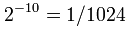

Оши́бка игрока́ (gambler’s fallacy) — или ложный вывод Монте-Карло, отражает распространённое ошибочное понимание случайности событий. Связана с тем, что, как правило, человек не осознаёт на интуитивном уровне того факта, что вероятность желаемого исхода не зависит от предыдущих исходов случайного события.
Например, в случае с подбрасыванием монеты много раз подряд вполне может произойти такая ситуация, что выпадет 10 «решек» подряд. Если монета «нормальная», то для многих людей кажется очевидным, что при следующем броске вероятность выпадения орла будет больше. Тем не менее такой вывод является ошибочным. Вероятность выпадения следующего орла или решки по прежнему остаётся 1/2.
Нужно, однако, разграничивать понятия: вероятность выпадения «орла» или «решки» в каждом конкретном случае и вероятность выпадения «решки» десять раз подряд.
Вероятность выпадения «решки» десять раз подряд будетравна .

Такой же будет вероятность выпадения и любой другой фиксированной последовательности из орлов и решек при 10 бросках монеты.